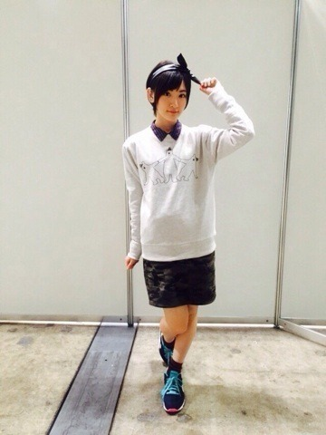
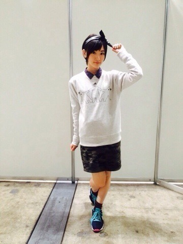
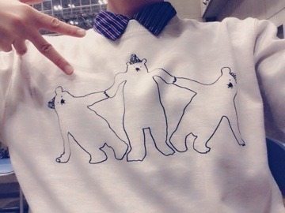

| 2014/11 05 Wed | 握手！握手！握手！ |
11月3日は、AKB48の個別握手会からの〜
乃木坂46全国握手会と言うなかなか珍しい1日でしたっ(＾∀＾)
AKBの方の個別握手会来て下さった皆さんありがとうございましたっ！！
中には乃木坂から応援しに来て下さった方、いこまふぁむもいていつも通りな握手が出来て嬉しかったよ〜♪
生駒ちゃんがAKBを兼任してくれて、乃木坂が好きになったよ！
ありがとう。
といって下さる方が何人もいて本当に嬉しかった！！！
直接言葉を聞くって素敵な事ですね(＾∀＾)

個別で着た服紹介します


靴以外全部竹下通りにて購入。
ゆうて靴は裏原にて購入。
スピンズさんに沢山お世話になりました〜♪
リーズナブル素敵♡♡

これからの季節、
しろくまが流行るのらかしら⁈
このゆるい感じがたまりません♡
そして！
乃木坂46全国握手会！
まずは握手会からスタートしました。
私は途中参加でしたが、幕張メッセからパシフィコ横浜まで来て下さった皆さんはパワーがありますね〜ヽ(・∀・)ノ
ありがとうございます！
生駒ちゃん来るの待ってたよって皆さん本当にありがとう！！
そして約半年ぶりにミニLIVEが復活！！
お客さんの数が各自に増えていた！！
びっくり
サプライズも盛りだくさんで、
アンダーLIVE、クリスマスLIVE、アルバム発売、何度目の青空か？合唱ver.披露
と一気に凝縮されて充実したときだったなと思います！！
アルバムは皆さんの投票によりどのカップリング曲を入れるかが決まりますのでねっ(＾∀＾)
皆さんぜひ投票してね！
ちなみに生駒ちゃんあれだよ、水玉模様っていう大切なソロ曲がありますよ！
今日は1日お仕事だぁ〜♪
へばなっ☆彡
コメント(436)
2014/11/05 12:12